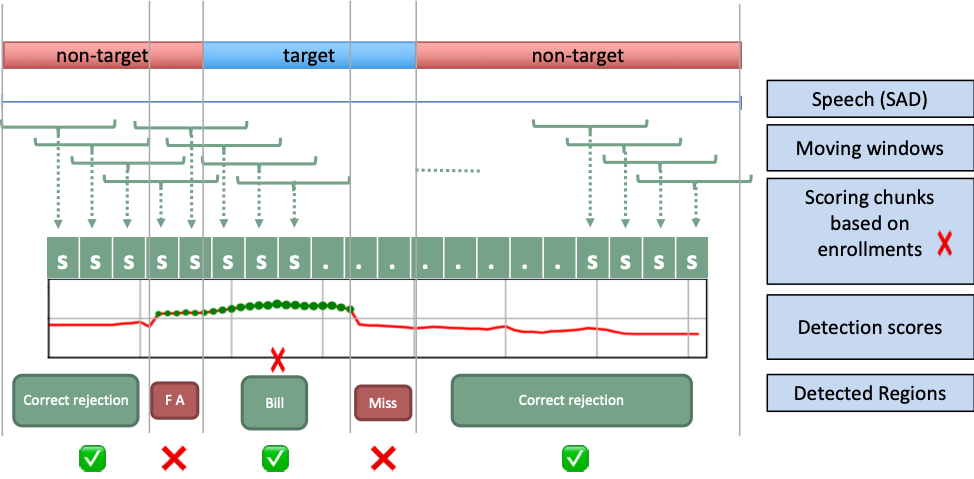
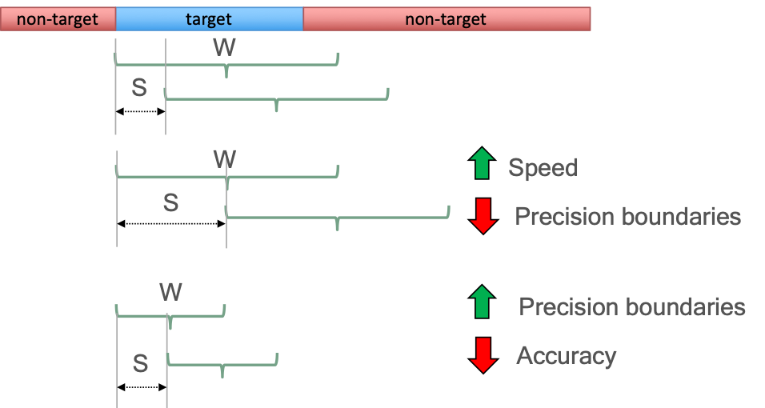

ldd-embedplda-v1 (Language Detection)
Version Changelog
| Plugin Version | Change |
|---|---|
| v1.0.0 | Initial plugin release with OLIVE 5.2.0, shares language models and classes with lid-embedplda-v3 |
| v1.0.1 | Minor update to add an error message if user tries to unenroll one of the default classes. Released with OLIVE 5.3.0 |
Description
Language Detection plugins will detect and label regions of speech in a submitted audio segment where one or more enrolled languages are detected being spoken. This is in contrast to Language Identification (LID) plugins, which label the entire segment with a single language. So, unlike Language Identification (LID), LDD is capable of handling audio where multiple languages are being spoken, and will provide timestamp region labels to point to the locations when speech from one or more of the enrolled languages is found.
The goal of language detection is to find and label the regions in an audio file where languages of interest are being spoken. This capability is designed to be used in files where two or more languages are present. For files where it is certain that only one language will be present, either because it is collected this way or because a human has segmented the file, language recognition (LID) plugins should be used. This release of language detection is based on "segmentation-by-classification", an approach in which the enrolled languages are detected using a sliding and overlapping window over the file. The plugin is based on a language embeddings DNN fed with acoustic DNN bottleneck features, and language classification using a PLDA backend and duration-aware calibration - it shares underlying language models and architecture with the lid-embedplda-v2 plugin. The LDD plugin was created for clean telephone or microphone data.
This plugin has been reconfigured to allow enrollment and addition of new classes. Unsupervised adaptation through target mean normalization, and supervised PLDA and calibration updates from enrollments have been implemented via the update function. These updates must be invoked by the user via the API.
Domains
- multi-v1
- Generic domain for most close talking conditions with signal-to-noise ratio above 10 dB. Currently set up with 16 languages configured (optionally configurable to up to 54 languages). See below for the currently-configured and available languages. See the configuring languages section for instructions on reconfiguring the available languages if necessary.
Inputs
Audio file or buffer and an optional identifier.
Outputs
LDD plugins return a list of regions with a score for each detected language. The starting and stopping boundaries are denoted in seconds. As with LID, scores are log-likelihood ratios, where a score greater than the default threshold of "0" is considered to be a detection.
An example output excerpt:
input-audio.wav 0.000 41.500 French 11.40590000
input-audio.wav 43.500 77.500 French 11.29558277
input-audio.wav 77.500 78.500 Modern Standard Arabic 2.63369179
input-audio.wav 78.500 80.500 Iraqi Arabic 2.25519705
input-audio.wav 85.500 86.500 French 2.06612849
input-audio.wav 97.500 98.500 French 3.74665093
input-audio.wav 98.500 99.500 Mandarin Chinese 2.22936487
input-audio.wav 105.500 106.500 Spanish 2.72254372
input-audio.wav 107.500 108.500 French 2.60355234
input-audio.wav 108.500 110.500 French 2.76414633
input-audio.wav 109.500 113.140 English 2.85003138
input-audio.wav 113.760 116.260 French 2.50716114
input-audio.wav 120.260 140.260 Korean 14.93032360
input-audio.wav 143.260 157.260 Korean 12.62243176
input-audio.wav 158.260 161.260 Mandarin Chinese 3.24917603
input-audio.wav 161.260 162.260 French 2.73345900
input-audio.wav 165.260 177.260 Korean 12.32051945
input-audio.wav 178.260 180.260 Iraqi Arabic 2.41706276
input-audio.wav 186.320 188.820 Iraqi Arabic 2.85040617
input-audio.wav 193.820 194.820 Spanish 2.21501803
Functionality (Traits)
The functions of this plugin are defined by its Traits and implemented API messages. A list of these Traits is below, along with the corresponding API messages for each. Click the message name below to go to additional implementation details below.
- REGION_SCORER – Score all submitted audio, returning labeled regions within the submitted audio where each region includes a detected language of interest and corresponding score for this language
- CLASS_MODIFIER – Enroll new language models or augment existing language models with additional data.
Compatibility
OLIVE 5.1+
Limitations
Known or potential limitations of the plugin are outlined below.
Minimum Speech Duration
The system will only attempt to perform language identification if the submitted audio segment contains more than 2 seconds of detected speech.
Languages of Low Confidence
Many of the language models that are included and hidden within the domain's data model, disabled by default, do not contain enough data within the model for reliable detection of this language, and are included solely to help with score calibration, and differentiating other languages. If in doubt regarding whether an enrolled language should be used for detection or not, please reach out to SRI for clarification.
Labeling Resolution vs. Processing Speed vs. Detection Accuracy
Region scoring is performed by first identifying speech regions and then processing the resulting speech regions above a certain length (win_sec) with a sliding window. Altering the default parameters for this windowing algorithm will have some impacts and tradeoffs with the plugin's overall performance.
Shortening the window and/or step size will allow the plugin to have a finer resolution when labeling language regions, by allowing it to make decisions on a smaller scale.
The tradeoff made by a shorter window size, though, is that the system will have less maximum speech to make its decisions, resulting in a potentially lower language labeling accuracy, particularly affecting the rate of missed speech and false alarms.
A shorter step size will result in more window overlap, and therefore more audio segments that are processed multiple times, causing the processing time of the plugin to increase.
These tradeoffs must be managed with care if changing the parameters from their defaults.
Comments
Language/Dialect Detection Granularity
LDD plugins attempt to distinguish dialects (ie., Tunisian Arabic and Egyptian Arabic) or a base language class (such as Arabic). These can be mapped back to the base language if desired. This requires one change to be enabled.
- A mapping file 'dialect_language.map' must exist within the domain of the plugin for which mapping is to be performed (eg. domains/multi-v1/dialect_language.map). This file is a tab-delimited, two-column file that lists each mapping for the dialect to the languages as "
\t ". Example lines include: Levantine Arabic Arabic Tunisian Arabic Arabic
In the example above, the output labels of the dialects will be mapped to the same base language 'Arabic'. Note the exception in which mapping is not performed is for user-enrolled languages where it is assumed the user has provided the dialect or language label based on their requirements.
Note that we recommend users request these mapping files from SRI, or request the mapping to be performed before delivery of the plugin so that SRI can test and validate the final mapping before delivery.
Note also that the system will not allow you to create an enrollment with the same class name that you have languages mapped to. This is to avoid confusing situations where the system isn't sure if it should be considering the original pre-mapped models, or the newly enrolled user model. You must provide a unique name for any new language enrollments, that does not conflict with the dialect_langage.map. If you have already enrolled a conflicting model, and then add a mapping to this same name, the plugin will provide a warning message and intentionally fail to load.
Default Enabled Languages
The following languages are identified as high-confidence languages, supported by a sufficient amount of training data to make them reliable language detectors. As such, they are enabled by default in the plugin as-delivered, and serve as a general purpose base language set.
| Language Name | (cont'd) |
|---|---|
| Amharic | Modern Standard Arabic |
| English | Mandarin |
| French | Pashto |
| Iranian Persian | Portuguese |
| Japanese | Russian |
| Korean | Spanish |
| Levantine Arabic | Tagalog |
| Iraqi Arabic | Vietnamese |
Supported Languages
The full list of languages that exist as an enrolled class within this plugin as delivered are provided in the chart below. Note that as mentioned previously, not all of these languages were enrolled with enough data to serve as reliable detectors, but remain in the domain for the benefits to differentiating other languages, and for score calibration. If in doubt regarding whether an enrolled language should be used for detection or not, please reach out to SRI for clarification.
| Language Name | ||||
|---|---|---|---|---|
| Albanian | German | Modern Standard Arabic | Somali | Wu |
| Azerbaijani | Greek | Macedonian | Spanish | |
| Belarusian | Haitian | Mandarin | Swahili | |
| Bengali | Hausa | Min Nan | Tagalog | |
| Bosnian | Hindi | Ndebele | Tamil | |
| Bulgarian | Indonesian | Oromo | Thai | |
| Burmese | Iranian Persian | Panjabi | Tibetan | |
| Cantonese | Italian | Pashto | Tigrinya | |
| Cebuano | Japanese | Portuguese | Tunisian Arabic | |
| Croatian | Khmer | Romanian | Turkish | |
| English | Korean | Russian | Ukranian | |
| French | Levantine Arabic | Serbian | Uzbek | |
| Georgian | Iraqi Arabic | Shona | Vietnamese |
Enrollments
Some recent LID plugins allows class modifications. A class modification is essentially an enrollment capability similar to SID. A new enrollment is created with the first class modification request (sending the system audio with a language label, generally 30 seconds or more per cut). A new language class will provide volatile scores unless sufficient cuts have been provided (approximately 10). In general, 30 minutes from around 30 samples is the minimum amount of data required to produce a reasonable language model. This enrollment can be augmented with subsequent class modification requests by adding more audio from the same language to an existing class, again, like SID or SDD. In addition to user enrolled languages, most LID plugins are supplied with several pre-enrolled languages. Users can replace these existing languages using their own data by enrolling audio with the same label as an existing language.
Configuring Languages
Most LID plugins have the ability to re-configure the languages available in a domain. Configuring languages in the domain can be done by entering the domain directory of interest within the plugin folder and editting domain_config.txt. This file lists the pre-enrolled languages available in the plugin. Disabled languages are indicated by a # at the start of the line. To enable a language, remove the #. To disable a language, add a # at the start of the line.
Segmentation By Classification
Live, multi-language conversational speech is a very challenging domain due to its high variability and conditions. Rather than exhaustively segment a file to identify pure regions with a single language , SBC scans through the file quickly using target language embeddings to find regions that are likely to be from a language of interest, based on the scores for their enrolled model. The approach consists on a sliding window with x-set steps as described in Figure 1.
 Figure 1: Sliding window approach for Segmentation-by-Classification (SBC) plugin
The first step this plugin takes is to mask the audio by performing speech activity detection. This allows some natural segmentation by discovering breaks between speech sections caused by silence, and allows the algorithm to focus on the portions of the audio that actually contain speech. Any speech segment longer than X seconds (configurable as min_speech, default 2 seconds) is then processed to determine the likelihood of containing a language of interest. Speech regions of up to X seconds (configurable as win_sec, default 4 seconds) are processed and scored whole, while contiguous segments longer than this are then processed using the sliding window algorithm shown above, whose parameters (window size/win_sec and step size/step_sec) are configurable if you find the defaults not to work well with your data type.
Global Options
The following options are available to this plugin, adjustable in the plugin's configuration file; plugin_config.py.
| Option Name | Description | Default | Expected Range |
|---|---|---|---|
| threshold | Detection threshold: Higher value results in less detections being output, but of higher reliability. | 0.0 | -10.0 to 10.0 |
| win_sec | Length in seconds of the sliding window used to chunk audio into segments that will be scored by language recognition. See below for notes on how this will impact the system's performance. | 4.0 | 2.0 to 8.0 |
| step_sec | Amount of time in seconds the sliding window will shift each time it steps. See below for important notes about the sliding window algorithm behavior. A generally good rule of thumb to follow for setting this parameter is half of the window size. | 2.0 | 1.0 to win_sec |
| min_speech | The minimum length that a speech segment must contain in order to be scored/analyzed for the presence of enrolled languages. | 2.0 | 1.0 - 4.0 |
| max_class_per_frame | Determines whether the plugin is forced to output a proposed language for each speech region, even if the top scoring language is below the detection threshold | True | True or False |
| max_class_per_file | Determines the maximum number of languages the plugin will consider possible to detect in a single file/scoring request. This parameter helps control short, spurious false detections. If the likely number of languages is known a priori, setting this value close to that can help boost performance. If it is set too low, however, you may hinder the plugin's performance, since it may become impossible for the plugin to be correct. If there are 3 languages being spoken in a file, for example, and this is set to 2, then it is impossible for the plugin to detect and output all three languages. | 3 | 2 - 6 |
| sad_threshold | SAD threshold for determining the audio to be used in meteadata extraction | -2.0 | -5.0 - 6.0 |
Additional Option Notes
min_speech
The min_speech parameter determines the minimum amount of contiguous speech in a segment required before OLIVE will analyze it to attempt to detect enrolled languages. This is limited to contiguous speech since we do not want the system to score audio that may be separated by a substantial amount of non-speech, due to the likelihood of including speech from two distinct languages. The parameter is a float value in seconds, and is by default set to 2.0 seconds. Any speech segment whose length is shorter than this value will be ignored by the language-scoring portion of the plugin.
win_sec and step_sec
The win_sec and step_sec variables determine the length of the window and the step size of the windowing algorithm respectively. Both parameters are represented in seconds. These parameters affect the accuracy, the precision in the boundaries between languages, and the speed of the approach. Figure 2 shows an example on how the modification of size of the window (W) and the step (S) affect those factors.
 Figure 2: Example of changing the win_sec and step_sec parameters and how this influences the algorithm speed as well as the precision and accuracy of the resulting language boundary labels